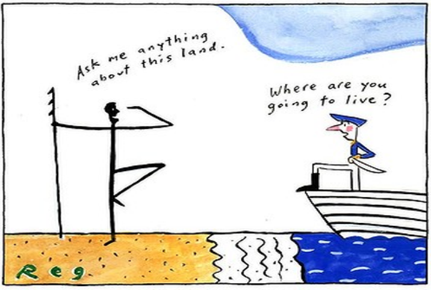

Original Blackboard item · _7400119_1
Lowitja O’Donoghue, South Australia’s first Indigenous registered nurse, CBE and Australian of the Year 1984 posits:
"Aboriginal culture has been subjected to the most profound shocks and changes. It is a history of brutality and bloodshed. The assault on Aboriginal people includes massacres, diseases, dispossession and dispersal from the land … I cannot overstate the traumatic consequences of policy and the destruction of Aboriginal and community life that resulted".
— (O’Donoghue, 1993, pp. 14–15)
It is now around 250 years since the arrival of the first fleet and the invasion of this continent by the British as a penal colony. The ongoing trauma that resulted from the brutality of colonisation can never be under estimated nor denied.
Module 2 provides a brief overview on the current health and wellbeing barriers and challenges that Aboriginal and Torres Strait Islander peoples still face within the context of historical factors that underlie the 'Closing the Gap’ policies.
